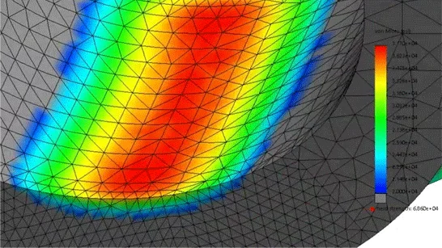
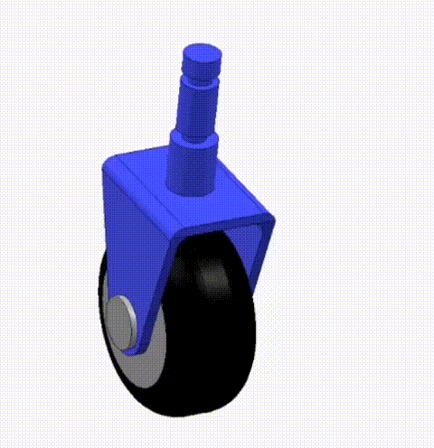
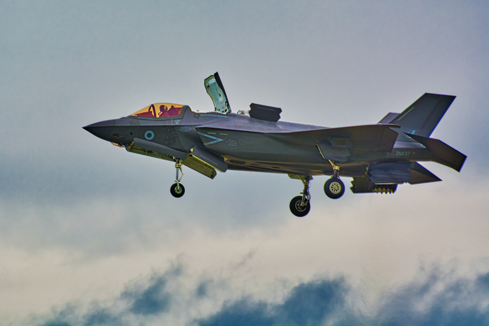
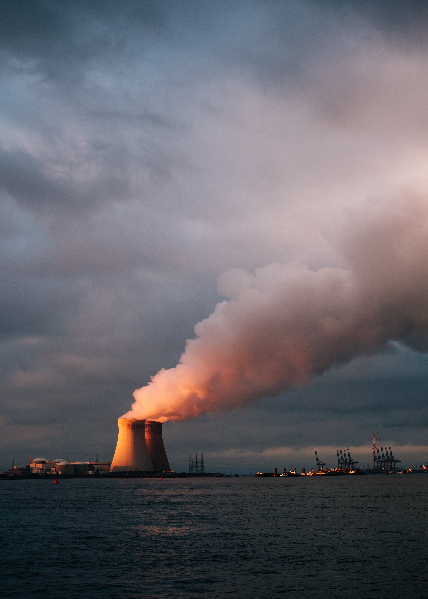
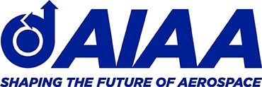
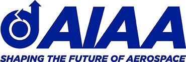
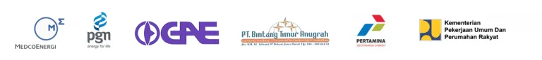
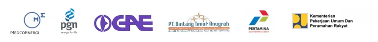

I N F I M E C H
Jasa Simulasi FEM

Anda Memerlukan Tenaga Ahli Dalam Menangani Proyek Atau Penelitian Anda?
Kami dapat melayani jasa simulasi terkait aliran fluida dan perpindahan panas dengan menggunakan metode simulasi FEM (Finite Element Method). FEA dapat menjadi solusi bagi permasalahan anda. Dengan memanfaatkan metode numerik dan didukung dengan model komputasi, Simulasi FEM mampu menyelesaikan permasalahan material dan desain anda.
Infimech memberikan solusi jasa simulasi FEM dan pengolahan datanya. Kami dapat menangani berbagai macam proyek Penelitian dengan latar belakang akademik dan industri. Hasil simulasi FEM dapat berupa data kuantitatif, grafik, gambar dan video animasi beserta pembahasan, kesimpulan dan saran dari penelitian atau desain yang dilakukan. Sehingga, dengan FEM, user dapat menyelesaikan permasalahan engineering dengan cepat, tepat dan hemat.
Simulasi FEM
Finite Element Method
Kami melayani jasa simulasi FEM untuk keperluan penelitian, optimasi produk dan desain. Pada simulasi FEM ini terbagi di beberapa tahap diantaranya.

Layanan Jasa Simulasi FEM

Analisis dan Pengolahan
Untuk memproses data mentah dari hasil simulasi CFD dan FEA, diperlukan pengolahan data, costumer bisa menggunakan jasa olah data untuk mendapatkan hasil simulasi sesuai dengan output yang diinginkan.
Selengkapnya
Analisis dan Pengolahan
Untuk memproses data mentah dari hasil simulasi CFD dan FEA, diperlukan pengolahan data, costumer bisa menggunakan jasa olah data untuk mendapatkan hasil simulasi sesuai dengan output yang diinginkan.
Selengkapnya
Set Up
Pemilihan set up untuk simulasi. Set up simulasi CFD dan FEA dipilih berdasarkan kebutuhan costumer, dapat memilih untuk transient atau steady, serta jenis aliran turbulent atau laminar.
Selengkapnya
Set Up
Pemilihan set up untuk simulasi. Set up simulasi CFD dan FEA dipilih berdasarkan kebutuhan costumer, dapat memilih untuk transient atau steady, serta jenis aliran turbulent atau laminar.
Selengkapnya
Validasi dan Verifikasi
Client dapat menggunakan model validasi dan verifikasi berupa Grid Independency Test, Analisis Konservasi Massa, Momentum dan Energy dam Stabilitas DAta, serta dapat juga validasi dengan refrensi lain.
Selengkapnya
Validasi dan Verifikasi
Client dapat menggunakan model validasi dan verifikasi berupa Grid Independency Test, Analisis Konservasi Massa, Momentum dan Energy dam Stabilitas DAta, serta dapat juga validasi dengan refrensi lain.
SelengkapnyaOutput Simulasi FEM
Kami Melayani Simulasi FEA Untuk Berbagai Kebutuhan Akademisi Dan Industri.
Output produk dari simulasi FEA yang kami berikan berupa;

Jasa Simulasi FEM Meliputi :

Analisis Static Load
Distribution of Factory of Safety
Model Slip Wear
Hub Piping Model With Stress Analysis

Analisis Getaran
Accoustic and Vibration of Electric Motor
Analisis Buckle Model
Nilai distribusi tegangan pada buckle

Analisis Coupled
Temperature - Displacement
Analisis Coupled
Temperature - Displacement
In Association With


Standardized by
 

Dipercaya Oleh 100+ Klien Dari Beragam Bidang Industri & Akademik
 
